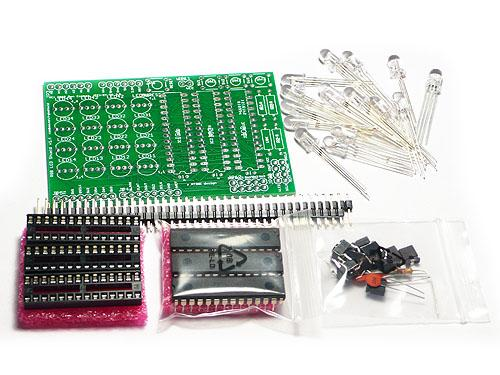
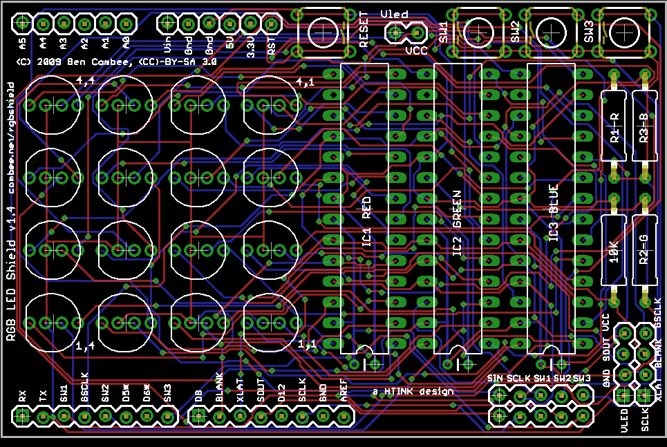
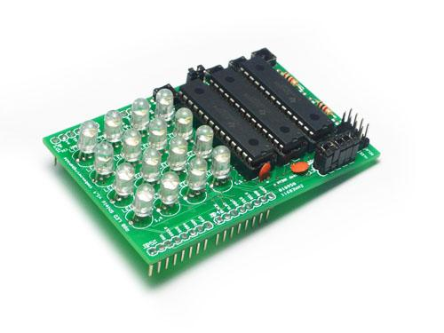

RGB LED Shield Kit
This Arduino-compatible shield uses three TI TLC5940 PWM LED driver ships to drive a 4x4 array of RGB LEDs. Each color is controlled by a different chip so you can adjust the reference resistors for the appropriate current. This also includes mounting positions for for three general-purpose buttons that are connected to ground, and a reset button. The TLC5940 chips are not directly connected to any Arduino pins, but a header is provided for you to make a manual connection depending on the needs of your sketch.
Model: OSK101E1P

This board is a version of the circuit used at the first HTINK workshop on March 14th, 2009 at Bug Labs in New York City.
The best library I've seen for interfacing with the TLC5940 chips used in this shield is the tlc5940arduino library. We used it in the HTINK class and it performed very well.
On the shield, the four LEDs at the corners are labeled with their X,Y coordinates: "1,1", "1,4", "4,1", and "4,4". The formula to turn a coordinate into a LED number is (X - 1 + (Y - 1) * 4).
Features
Application Ideas
Cautions
The warnings and wrong operations possible cause dangerous.
Schematic
This version has some major changes from the original 1.1 board.
- Fixed the DCPRG signal. In the 1.1 shield, this was tied to GND instead of VCC. This prevents you from loading dot correction information into the TLC chips.
- Added a 10K resistor between BLANK and VCC. This pulls up the BLANK line when the Arduino isn't asserting it, keeping the LEDs from lighting when there's no control signals (like during reset).
- Added a default header parallel to the TLC signal header so you can just use jumper wires to give the shield a default wiring hookup. You also can populate this with a 2x8 header and then use plastic jumpers for this.
- Disconnected the power net for the LEDs from the board VCC and provide a two pin connector to connect them together. This would allow running the LEDs at a different voltage if desired.
- The GSCLK, BLANK, and XLAT signals are now all hard-wired to Arduino pins D3, D10, and D9 respectively. This is because the TLC5940 library uses those pins for their special timer properties, so they can't be reassigned.
- Added an 2x4 output header that allows chaining a second board to the first one, with all the TLC5940 control pins, power, and ground provided.
- Eliminated the extra holes that were provided to wire up signals and replaces them with silkscreen labels for the Arduino signals.
- All of the resistors are moved to the edge of the board, making it easy to hook up potentiometers to figure out the brightness settings for each channel
- All ICs and resistors are labeled with the color channel they control.
- ERRATA: Vled and Vcc are labeled backwards on JP11. Since you usually just connect these together, there's no real problem, but if you want to power the LEDs using a separate voltage source, connect to the proper pin.
- ERRATA: The GSCLK and BLANK labels are reversed on the Arduino shield connector. The labels on the piggyback connector, JP21, are correct.
RGB_LED_Shield_1.4.zip - includes schematic, board image, and design files for Eagle CAD.

Specification
May include key specification and other specifications.
Pin definition and Rating
Mechanic Dimensions
Usage
Hardware Installation
Assembled View

Programming
Includes important code snippet.
Demo code like :
Example
The projects and application examples.
Bill of Materials (BOM) /parts list
- 16 common-anode RGB LEDs (LED11-LED44)
- 3 TI TLC5940N LED driver ICs (IC1, IC2, IC3)
- 3 28-pin DIP IC sockets
- 3 2K ohm resistors (R1, R2, R3)
- 1 10K ohm resistor (R4)
- 2 1x8 female wirewrap headers
- 2 1x6 female wirewrap headers
- 1 2x5 male header
- 1 2x4 male header
- 1 1x2 male header
- 6 jumpers for connecting adjacent pins
- 4 Omrom-style SPST momentary switches
- 3 0.1uF ceramic capacitors
FAQ
Please list your question here:
Support
If you have questions or other better design ideas, you can go to our forum or wish to discuss.
Version Tracker
| Revision
|
Descriptions
|
Release
|
| v1.4
|
the revise version
|
Jul 08, 2009
|
Bug Tracker
Bug Tracker is the place you can publish any bugs you think you might have found during use. Please write down what you have to say, your answers will help us improve our products.
Additional Idea
The Additional Idea is the place to write your project ideas about this product, or other usages you've found. Or you can write them on Projects page.
Resources
How to buy
Click here to buy: http://www.seeedstudio.com/depot/rgb-led-shield-v14-kit-p-430.html?cPath=132_134.
See Also
Other related products and resources.
Licensing
HTINK RGB Shield 1.4 by Ben Combee is licensed under the Creative Commons Attribution-ShareAlike License 3.0 Source code and libraries are licensed under GPL/LGPL, see source code files for details.
External Links
Links to external webpages which provide more application ideas, documents/datasheet or software libraries
Copyright (c) 2008-2016 Seeed Development Limited (
www.seeedstudio.com /
www.seeed.cc)
This static html page was created from http://www.seeedstudio.com/wiki